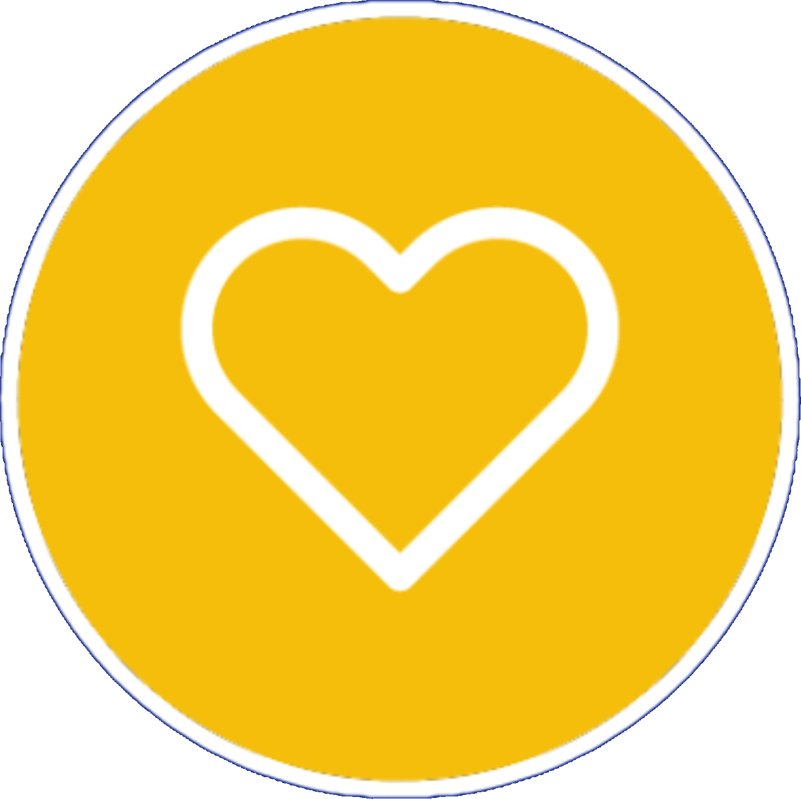
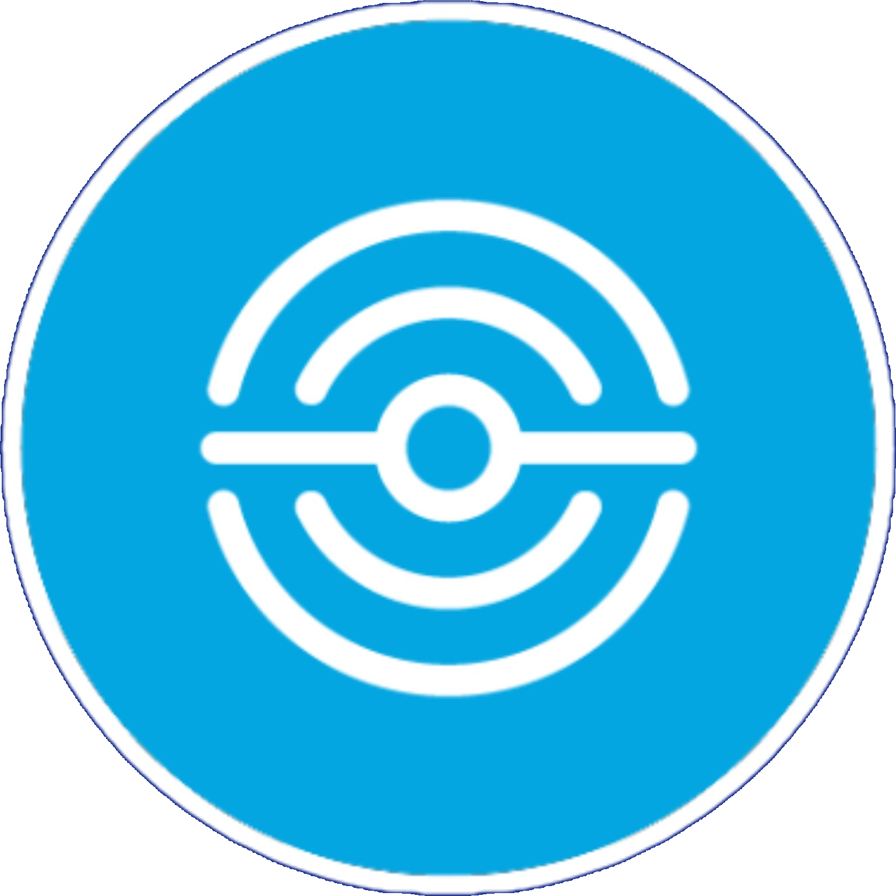

01 / IDENTIFICOLo que te hace único.
Intereses y fortalezas.
Aprender. Convivir. Descubrir.

Cercanía, límites claros y oportunidades para aprender haciendo.
Una ruta sencilla para acompañar a cada alumno.

01 / IDENTIFICOIntereses y fortalezas.
Ritmos y procesos.
Curiosidad y autonomía.

04 / ACTÚOFamilia y colegio.
Nombre, voz y acompañamiento.
Proyectos que conectan con la vida.
Pensar, colaborar y decidir.
Un ecosistema continuo desde los primeros años hasta la adolescencia.
Un comienzo lleno de movimiento, lenguaje, vínculos y curiosidad.
Proyectos y experiencias para conectar ideas, habilidades y confianza.
Autonomía, pensamiento crítico y herramientas para tomar decisiones.